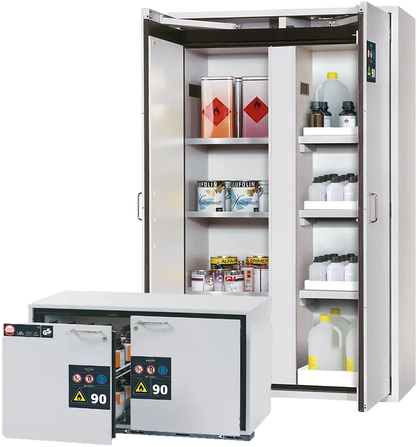

Flammables and Volatile Substances
These cabinets are used for the safe, passive storage of flammable liquids in work rooms in accordance with applicable national regulations. The models are tested, certified and marked according to the requirements of EN 14470-1.
Robust construction and longevity: triple hinged door, body made of powder-coated sheet steel, safety elements assembled outside the cabinet for increased protection against corrosion. Two in one: 2 compartments (vertically separated) allow the storage of flammable liquids and aggressive chemicals in one cabinet. User-friendly and safe: door open arrest system (standard), convenient and safe removal or storage of containers. No unauthorised use: doors lockable with profile cylinder (integration into an existing locking system possible). Easy alignment: adjusting aids to compensate for uneven floors. Ventilation: integrated air ducts ready for connection (DN 75) to a technical exhaust system.